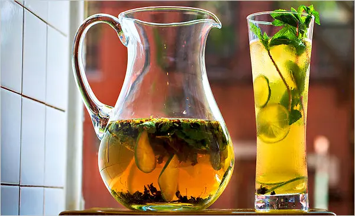

The Cool Method
literally...

This type of tea is made not by steeping your choice of tea in hot water but rather in cold water.
It is a delightful drink to guzzle down on a hot summer day (or winter day idfk i wont judge you)
Things you will need:
- H2O
- Some tea of your choice
- A covered container to steep your tea in
- A refrigerator
Instructions:
- Put your tea in the container, you can put as much or as little tea as you would like depending on how strong you like your tea
- Fill your container with water
- leave the container in the fridge for about 8-12 hours
- Thats it